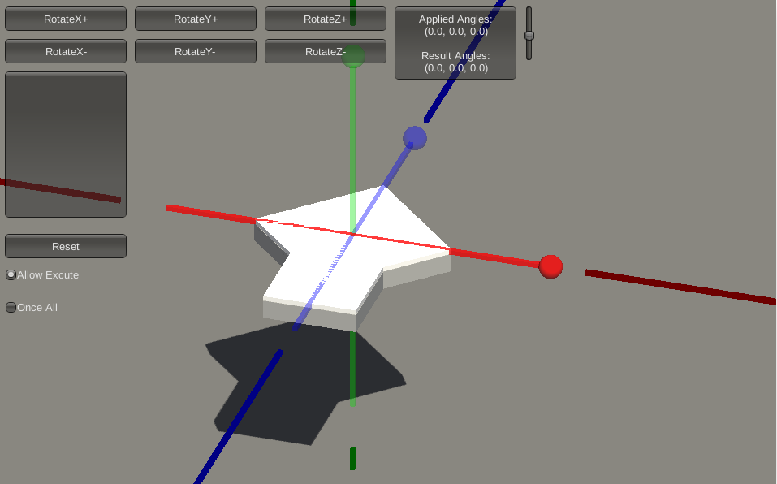
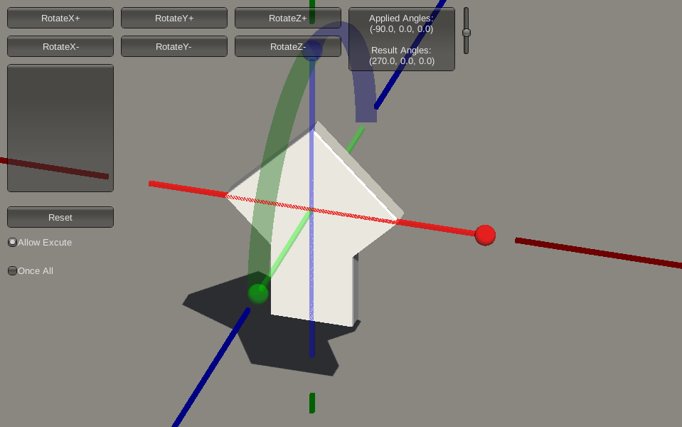
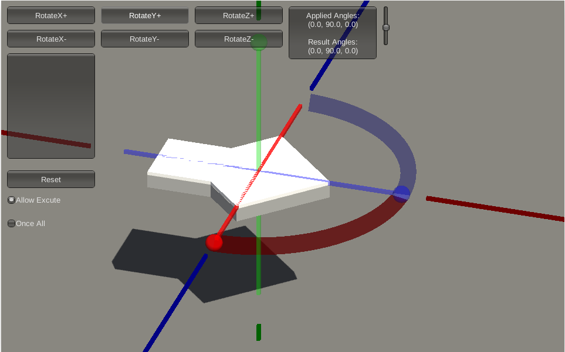
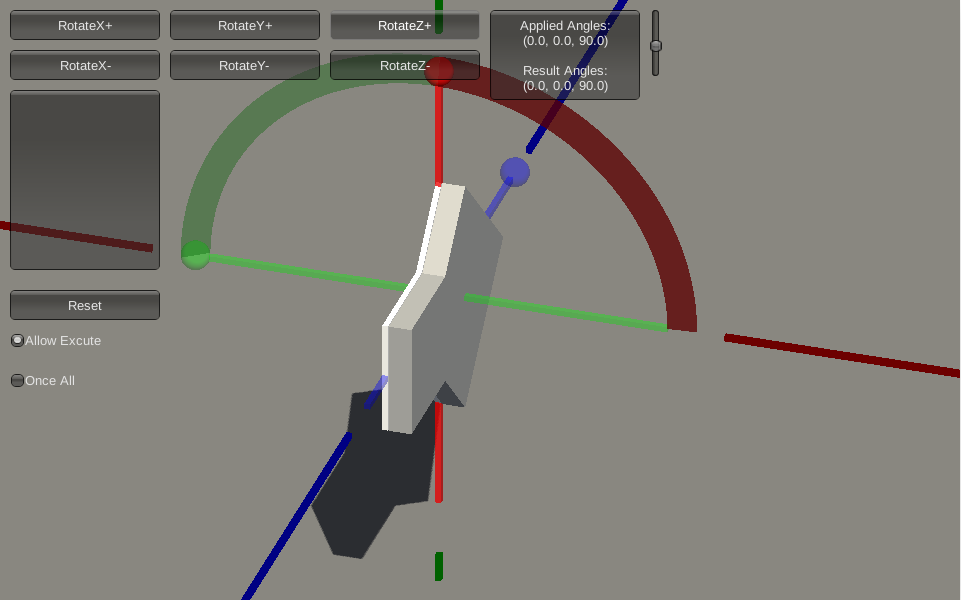
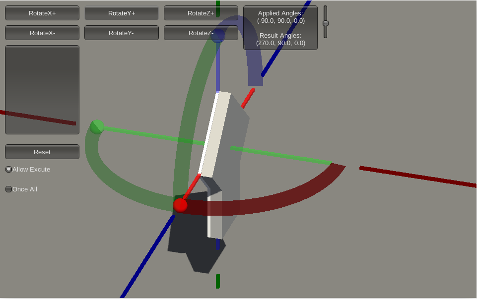
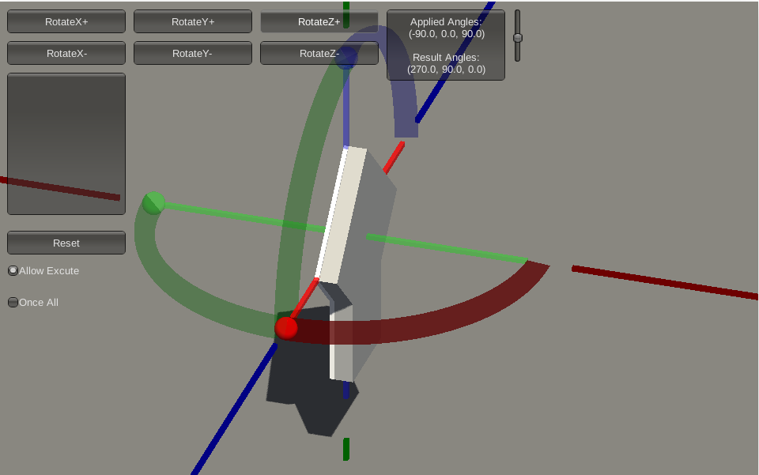

坐标系统
将物体的坐标最后转换成屏幕最后输出的结果，需要经过几次坐标系统的叠加转换，如下图：

1、局部坐标（Local Space）是物体相对于局部原点的坐标，也是物体其实的坐标。
2、下一步是将局部坐标变换成世界控件坐标（World Space），世界控件坐标是处于一个更大的空间范畴。物体相对于物体原点的坐标变换成相对于世界原点的坐标。
3、接下来将世界坐标变换成观察空间坐标（View Space），使得每一个物体的坐标都是从摄像机的角度进行观察。
4、然后需要将其投影到裁剪坐标（Clip Space）。坐标会被处理在-1.0到1.0之间的范围，由此判断哪些顶点将会出现在屏幕上。
5、最后，将裁剪坐标变换成屏幕坐标（Screen Space），这是一个视口变换（Viewport transform）的过程。视口变换将位于-1.0到1.0范围内的坐标变换到由函数glViewport所定义的坐标范围内。最后变换出来的坐标会被送到光栅器，将其转化为片段。
公式如下：
右手坐标系
OpenGL使用右手坐标系。正X轴方向指向右边，正Y轴指向上方，正Z轴由屏幕内部指向外面。

也可以伸出右手，大拇指（正X轴）指向右边，食指（正Y轴）指向上方，中指（正Z轴）指向自己。
左手坐标系在DirectX中广泛应用，并且在标准化设备坐标系中OpenGL也是使用左手坐标系（投影矩阵交换了左右手）。
Z缓冲（深度缓冲）
OpenGL使用Z缓冲来存储深度信息，它决定何时是否覆盖一个像素。
深度值存储在每个片段中（片段的z值），当片段要输出它的颜色时，OpenGL会将它的深度值和z缓冲进行比较，如果当前片段在其他片段之后，它将会被丢弃，否则将会覆盖。这个过程称为深度测试，由OpenGL自动完成。
深度测试默认是关闭的，可使用函数glEnable来开启，使用函数glDisable来禁用：
1 | glEnable(GL_DEPTH_TEST); |
同时，需要使用函数glClear来清理上一帧的深度缓冲：
1 | glClear(GL_COLOR_BUFFER_BIT | GL_DEPTH_BUFFER_BIT); |
摄像机
从世界空间坐标系转变成观察空间坐标，首先需要知道观察者，即摄像机相对于世界空间的坐标，还有就是摄像机方向。
摄像机位置
摄像机位置简单来说就是世界空间中一个指向摄像机位置的变量，例如：
1 | glm::vec3 cameraPos = glm::vec3(0.0f, 0.0f, 3.0f); |
值得注意的是，正Z轴是从屏幕指向你的，如果要摄像机向后移动，把它沿着Z轴正方向移动即可。
摄像机方向
下一个需要的向量是摄像机的方向，这里指的是摄像机指向哪个方向。现在我们让摄像机指向场景原点：(0, 0, 0)。还记得如果将两个矢量相减，我们就能得到这两个矢量的差吗？用场景原点向量减去摄像机位置向量的结果就是摄像机的指向向量。由于我们知道摄像机指向z轴负方向，但我们希望方向向量(Direction Vector)指向摄像机的z轴正方向。如果我们交换相减的顺序，我们就会获得一个指向摄像机正z轴方向的向量：
1 | glm::vec3 cameraTarget = glm::vec3(0.0f, 0.0f, 0.0f); |
方向向量(Direction Vector)并不是最好的名字，因为它实际上指向从它到目标向量的相反方向（译注：注意看前面的那个图，蓝色的方向向量大概指向z轴的正方向，与摄像机实际指向的方向是正好相反的）。
Look At
我们知道了摄像机的位置和方向，可以使用GLM库的函数lookAt来得到观察矩阵。
1 | glm::mat4 view; |
函数glm::LookAt需要三个参数——摄像机位置、目标位置和世界空间中的上向量。
欧拉角
欧拉角表示三维控件中旋转的三个角——俯仰角（Pitch）、偏航角（Yaw）和滚转角（Roll）。

万向节死锁
文章【Unity编程】欧拉角与万向节死锁（图文版）解释得很清楚，出现万向节死锁的原因，简单来说就是，当一个轴转动了某一个角度，使得与另一个轴处于一个平面上后，这时对那个轴的操作得不到预期的效果。
借助工具（这里）来加深对万向节死锁的理解。
首先我们先了解下工具的使用情况。
红色轴为X轴，绿色轴为Y轴，蓝色轴为Z轴，有实心圆点的一端是正方向。如下图：

俯仰角（Pitch）改变的方向是垂直于X轴，平行于YZ平面。如下图：

偏航角（Yaw）改变的方向是垂直于Y轴，平行于XZ平面。如下图：

滚转角（Roll）改变的方向是垂直于Z轴，平行于XY平面。如下图：

下面开始实现万向节死锁，第一步，我们先将目标朝上扬起90°，即俯仰角（Pitch）添加90°。如下图：
1、假设我们第二步将目标向右旋转90°，即偏航角（Yaw）添加90°。如下图，对于目标来说，它是滚动旋转了90°。

2、假设我们第二步将目标向右滚动旋转90°，即滚转角（Roll）添加90°，如下图，跟第一种假设情况一样，对于目标来说，它是滚动旋转了90°，但是它运动的方向并没有垂直于Z轴，平行于XY轴。

显然，自由度从原来的三个自由度变成了两个自由度（俯仰角和偏航角）。因为X轴和Y轴平行了，如下图：

四元数
摄像机类的使用记录
概述
在这里可以找到教程中的摄像机类的实现。
可以看到，Camera类接受四个参数（position, up, yaw, pitch）。
1 | glm::lookAt(Position, Position + Front, Up); |
Camera类将lookAt函数的第二个目标位置参数变成Position+Front，Front变量存储摄像机朝向的向量（前轴）。
1 | glm::vec3 front; |
通过鼠标控制改变俯仰角和偏航角，进而改变摄像机的前轴和上轴，最后改变lookAt的位置。
值得注意的是，假设俯仰角和偏航角的值都为0，那么Front值为(1,0,0)，一个向右的正X轴方向，即摄像机默认看向X轴正方向。一般地，我们需要将摄像机设置成垂直看向XY平面，所以需要默认给摄像机一个偏航角-90°，使得摄像机从朝向右变成朝向里。
摄像机位置
1、摄像机位于正Z轴上，看向原点(0,0,0)
1 | Camera camera(glm::vec3(0.0f, 0.0f, 45.0f), glm::vec3(0.0f, 1.0f, 0.0f), -90.0f, 0.0f); |
这时，计算出来的Front为(0,0,-1)，看向负Z轴，这里可以计算出lookAt点为(0,0,44)。但为什么不是原点(0,0,0)呢？其实，这里无论是(0,0,44)还是(0,0,0)，都是一样的视角，只因为摄像机(0,0,45)本身也在Z轴上，这三个点都在同一条垂直于XY平面的直线上，而摄像机默认视角是垂直于XY平面的。
假如把Up值改成(0,-1,0)，这时的视角就是倒立看到的视角。
2、摄像机处于45°视角，看向原点(0,0,0)
1 | Camera camera(glm::vec3(0.0f, 45.0f, 45.0f), glm::vec3(0.0f, 1.0f, 0.0f), -90.0f, -45.0f); |
Front值为(0,-0.7,-0.7)（向量的长度不会改变向量的方向，它跟(0,45,45)平行反向）。
可以看到俯仰角倾斜了45°，因为需要摄像机的视角与XY轴的夹角为45°。
3、摄像机围绕原点(0,0,0)旋转
我们选择摄像机的视角是位于XY平面看向原点(0,0,0)，处于(0,-45,0)位置。
1 | Camera camera(glm::vec3(0.0f, -45.0f, 0.0f), glm::vec3(0.0f, 0.0f, -1.0f), -90.0f, 90.0f); |
那么需要设置摄像机的俯仰角固定为90°，偏航角起始值为-90°，且世界上向量应为(0,0,1)或(0,0,-1)。
然后，需要把Camera类中的目标坐标从Position + Front改成glm::vec3(0.0f, 0.0f, 0.0f)，使得摄像机一直看向原点。
最后，需要添加一个函数，在每个周期更新摄像机的位置和偏航角。
1 | void auto_cycle(){ |
更改位置的原因很简单，更改偏航角的原因是要让摄像机一直面向原点。